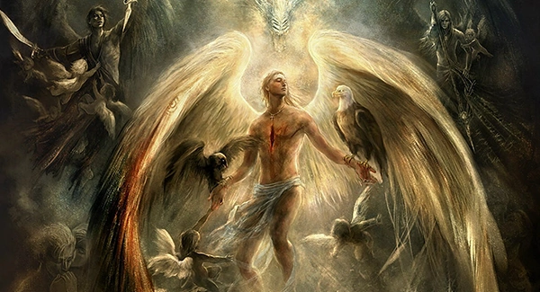

Anjos

Sendo um dos seres mais poderosos da criação,
os anjos geralmente superam todos os demônios, monstros, fantasmas e outras criaturas sobrenaturais,
mas são incapazes de competir com os Leviatãs, O Anticristo, Eva,
Cavaleiros do Apocalipse, Príncipes do Inferno, Jack, Arcanjos,
Entidade Cósmica, Escuridão e Deus.
Desconhecido